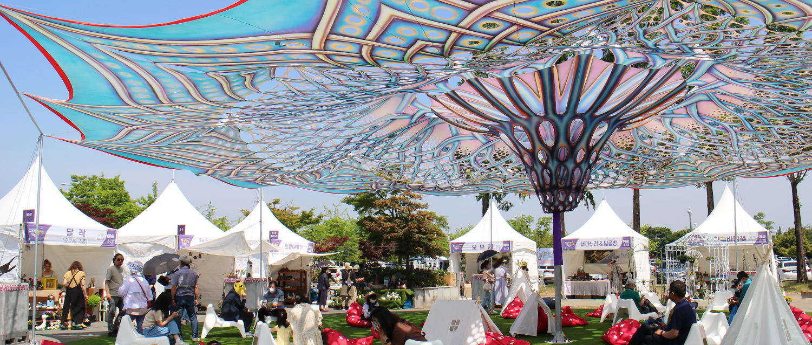

|  |
다양한 콘텐츠를 통해 새로운 문화를 만들어가는 전주! 문화행사의 열기로 가득한 전주에서 즐기는 모두의 축제 |
오랜 시간 팬데믹으로 인해 위축되었던 전주가 위기를 극복하고 전통과 문화, 축제의 도시로 깨어났다. 다양한 콘텐츠를 통해 새로운 문화를 만들어가는 전주, 곳곳이 여행객을 위한 축제의 장으로 뜨거운 열기가 가득하다. 전주에서 남녀노소 모두가 함께하는 문화 축제를 통해 생동하는 전주, 활기가 넘치는 전주를 온몸으로 느껴보길 바란다. 영화제의 시작을 알리는 전주국제영화제부터 한지의 여러 가지 기능을 재해석해 문화적 가치를 알리는 한지문화축제, 전주에서 만나는 조선의 역사를 테마로 전주를 즐기고, 전주를 느낄 수 있는 다양한 문화 행사들이 준비되어 있다. 지금부터 전통과 문화, 축제의 도시 전주를 100% 만끽할 수 있는 여행을 떠나보자. |